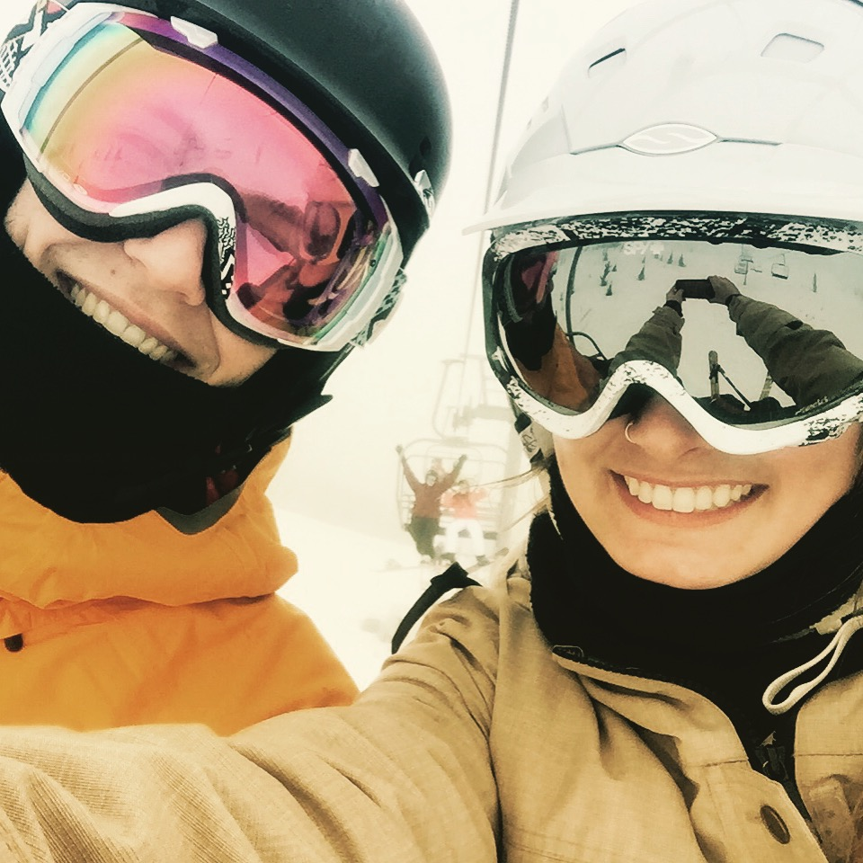

Resume
About Me
I grew up in the small town of Colville Washington. Despite the lack of people, there are a lot of outdoor activities to do in Colville. I enjoy hiking, biking, skiing, fishing, and dancing. I am also interested in art. Ever since I was little I loved creating things. I am passionate about coming up with new concepts and ideas. I also love expirimenting with different forms of media. I would like to gain more knowledge about photography, and film making in the future.
Education
- Eastern Washington University
- 2013-Present
- Visual Communication Design
- Colville High School
- 2009-2013
- Graduated with High Honors
Expirience
- Evergreen Apartments
- 2009-2014
- Lawn care and mantainance
- Hills Resort
- 2014 Summer
- Worked in the resturaunt as a server, and hostess
- Colville Sign Company
- 2015 Summer
- Responsible for assembly, and application of vinyl signs
Skill Set
- Image composition
- Logo Design
- Editing
- Layout
- Painting
Software
- Photoshop
- Illustrator
- Indesign
- Github
- Codepen